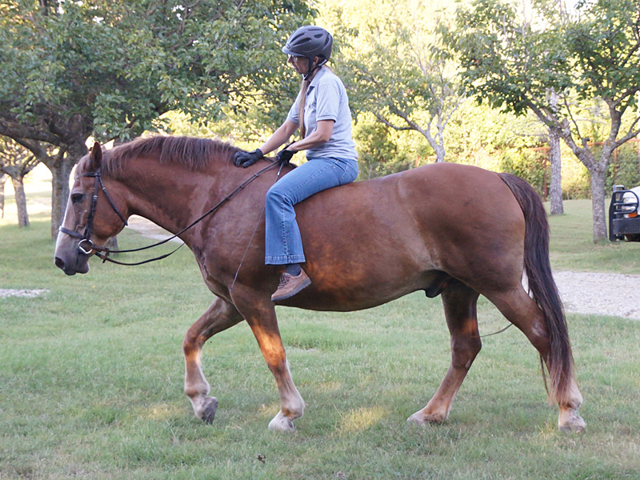
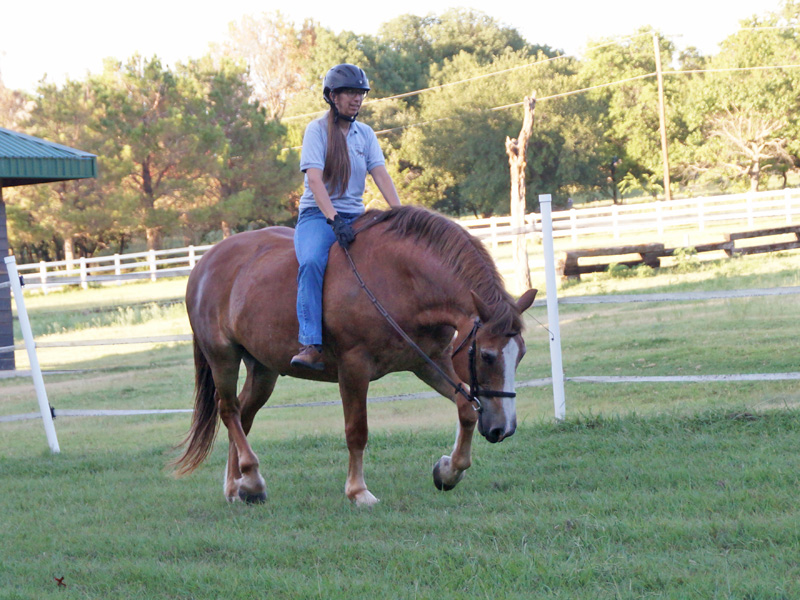
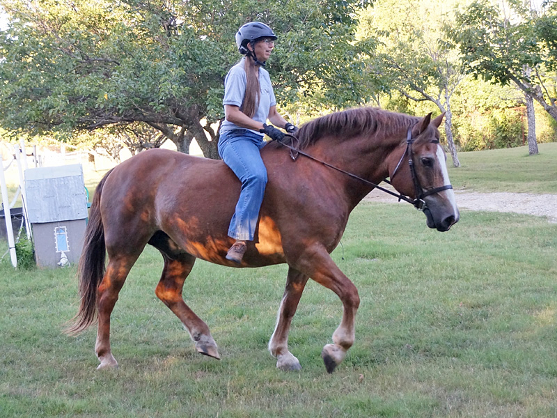
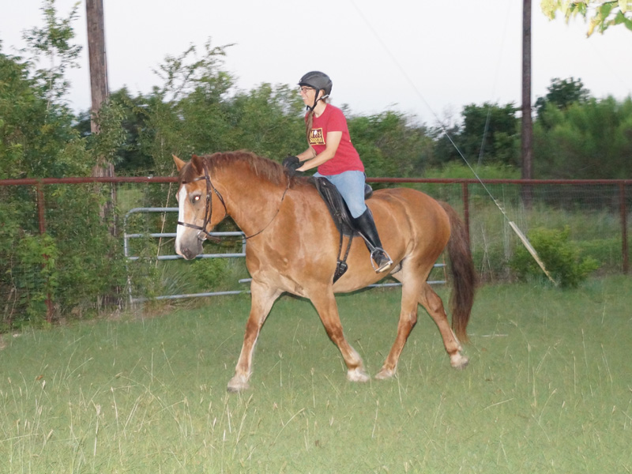
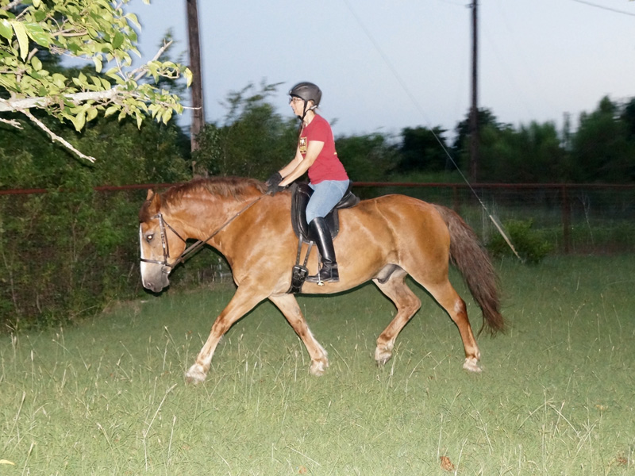
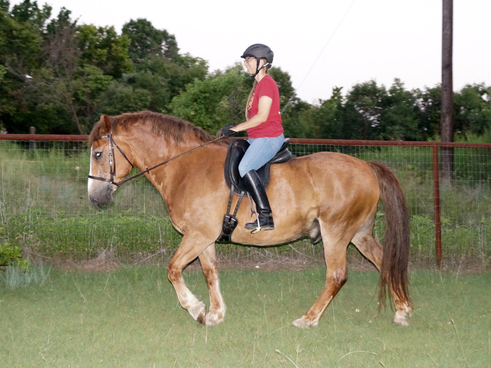

Thistle playing at home
Thistle is back from his dressage lease, but while it's hot, we're just playing
at dressage. I like that I can just catch him with the bridle and hop on bareback
for a little fun around the yard.

A bit like riding a couch.

Stretchy trot, balanced with a lot of horse under me.

So responsive in the trot.

Trotting out as it gets dark.

Reaching forward into a lengthen.

I love that it always feels like he's waiting for the next cue when I'm riding him.